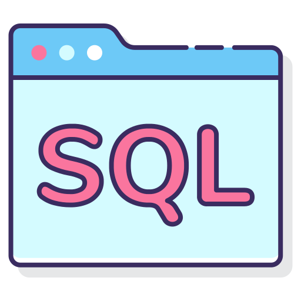
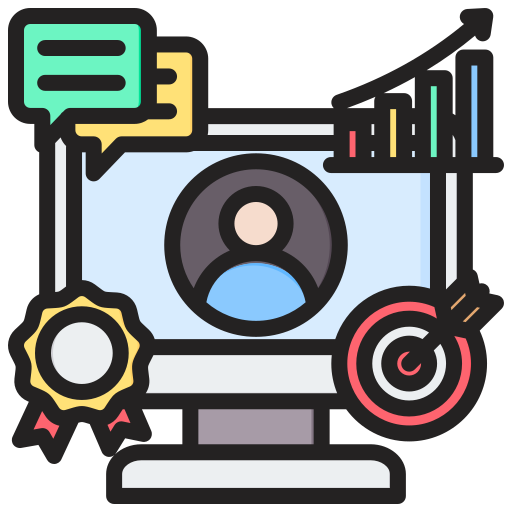

Habilidades y Competencias

JAVA
Manejo básico de todas las propiedades de java:
- Programacion orientada a objetos
- Familiaridad con frameworks como spring, JPA, Hipernate
- Familiaridad con los servivios Web comunes-SOAP/REST
- Conocimiento en bases de datos relacionales.
Java

SQL
Manejo básico de todas las propiedades de SQL:
- Conocimiento en los sistemas de bases de datos
- Conocimientos en estructurar bases de datos
- Conocimiento en estresijos de las tablas y relaciones en bases de datos
- Conocimiento en escribir consultas simples y medianas
SQL

HTML
Manejo básico de todas las propiedades de HTML:
- Conocimiento basico en etiquetas html
- Conocimiento basico en inyecctar lenguajes como js y css en html
- Conocimiento basico en base de datos web
HTML

Springboot
Manejo básico de todas las propiedades de Java:
- Conocimiento con la implementacion de Java y desarrollo de aplicaciones
- Conocimiento en bases de datos relacionales
- Implementar codigo robusto creando pruebas unitarias
- Familiarizado con procesos de diseno de aplicaciones de 12 factores y la arquitectura de microservicios
Spring Boot

JAVA (librerias JavaFX)
Manejo básico de librerías JavaFX:
- Conocimiento basico de programacion con JavaFX
- Conocimiento basico de la sintaxis de JavaFX
- Integracion continua
- Conocimiento en Java
JavaFX

CSS
Manejo básico de propiedades de CSS:
- Conocimiento basico en css
- Adaptativo a diferentes situaciones
- Aprendo y adapto a nuevas tecnologias y tendencias
CSS
.png)
.png)